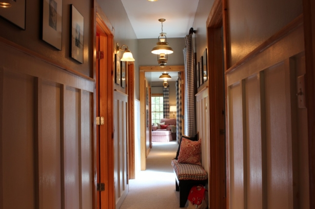
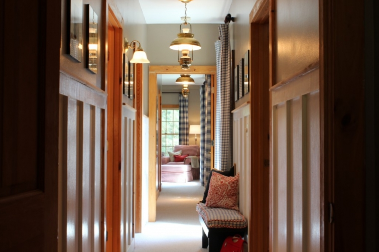
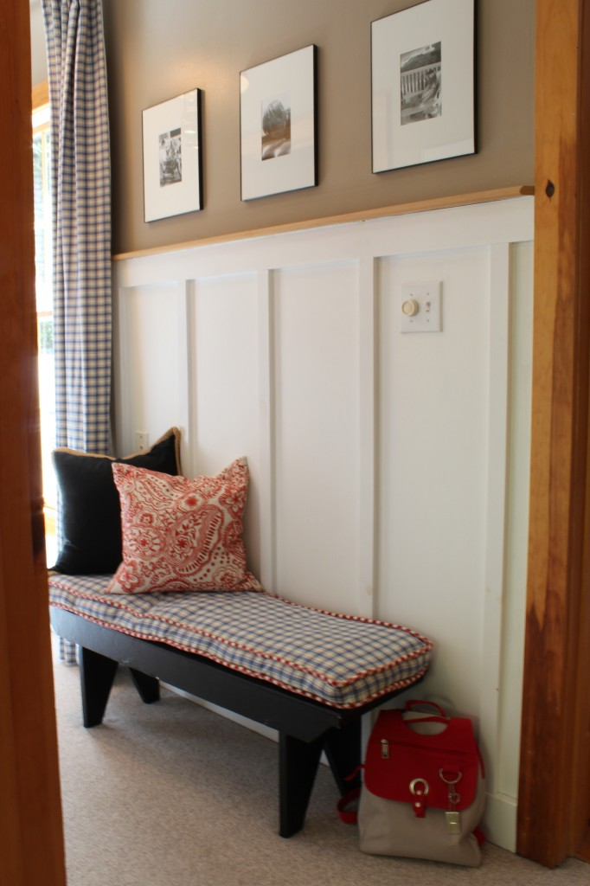

.png)
.PNG)
.PNG)
.PNG)
.PNG)
.PNG)
.JPG)
.JPG)
.PNG)
.PNG)



See that hallway up there? Doesn’t it look like you are looking down some long tunnel? My parents were over for dinner Saturday night, and while they were here, my dad made the comment that our bedroom hallway fools you into thinking that our house is much larger than it is. I think he is right. It seems very long for a 2400 sq. ft. home, and the fact that part of it is really part of the master bedroom makes it appear even longer. Let’s take a step closer.

That’s a little better now. I don’t know why those upper walls are appearing green on my monitor. Hmm… they are definitely a khaki tan. Oh well, on to more important stuff. I did some switching around with drapes in this space in the hopes of breaking up the tunnel vision some. These were once in the master bath, and the old ones from here are now in storage (until I can come up with another idea for them.)
That little bench that my husband made was also put there in the hopes of reducing the tunnel effect of that space – sort of like a visual road block. I made the seat cushion for it with fabric that matches the curtains, and it is piped in some old red gingham linen that was actually a scrap from daughter’s drapes. The only other thing I know to do to reduce that tunnel effect is to paint those upper walls a different color so that it does not look like one long space…or do I want the one long space? Like my dad says, it makes you think the house is bigger than it is. Your thoughts?

You know I can’t write a post without sharing some pretty interiors with you. 🙂 I want to show you some hallways that are truly bedroom halls – not entryways and not stairways (saving the stairs for another post.) Here are just a few….
Like every other room in our house, I have framed and matted black and white photographs here. Look what these folks did with clipboards. And I love that built in cabinet! My guess is that it is for linen storage. I could use something like that here.
Or maybe I should use a collection of gorgeous red frames for our photos – and those great lights. I like the dark doors here too (and all the wood on the walls and ceiling is not hurting one bit.)
Let’s go in a totally different direction in this hallway – absolutely no artwork. The white painted planks are the architectural details that speak for themselves. Isn’t the simplicity here what makes it beautiful? (contrasted with the floor of course.)
There is more painted wood in the next one, but they have added just a touch of artwork and a little table. It seems to work perfectly in this hallway.
The millwork is again gorgeous in the following one, and look at the number of transom windows! I thought at first it was just two, but after looking more closely, I realized there is one above every single door there. I also like the fact that even though you can see two pendant lights, they are not identical.
 melanie davis via laurenleonardinteriors.com
melanie davis via laurenleonardinteriors.com
How about practical and pretty for a hall? This one has built in bookshelves and window seats for the practicality of reading nooks, and the use of natural wood on the ceiling and below the chair rail for prettiness and warmth.
No room for a window seat in this one, but with all the walls made into bookcases, this hall becomes a small library. What a wonderful use for the space!
A window seat would have probably been nice in our hall, and I have tried the bench directly in front of the window. For some reason it just didn’t look as well there, but don’t you love the one in this hallway? I really like the way that entire window is trimmed out.
 homemadeinheaven.blogspot.com.au
homemadeinheaven.blogspot.com.au
The one above is so calm and soothing. Let me wake you up with some color! Sarah Richardson’s little hallway into the powder room of her summer cottage is wall to wall with built in closets in a gorgeous red (Benjamin Moore’s Burnt Peanut Red.)
Of course, I have saved my favorite for last, and I am sure you’ve seen this one on Pinterest over and over again. Let me just tell you all the things that make me love this space…the sunlight pouring in the unadorned windows, the white painted beadboard, the old wood flooring, the bright blue checked seat cushions piped in a contrasting fabric for the window seats, the piles of blankets adding touches of plaid and red in the built in shelves, the antique sconces, and let’s not forget that handsome old bench. Phew! Did I leave anything out?
Well thanks for wandering down all these halls with me. Unfortunately, none of them really had the long tunnel effect that mine appears to have going on. I guess if I don’t make any changes in mine, we can always use it as a bowling alley! 🙂
Until next time…..


.PNG)
Kelly,
I think your hall looks great, simple and clean with pretty walls and art. I love the hall where they’ve made the walls bookshelves. I wish I had room for that idea…there’s always need for more bookshelves in our family.
Karen
———————————————————————-
Karen- We are book-aholics here too…never enough space for all the books. (Trying to figure out now what to do with my son’s boxes and boxes of books.) Thank you for your kind comments about our hallway. Like you, I would love it to be wider and install bookshelves there.
Kelly
I LOVE your hallway exactly the way it is: the lighting, board and batten, black and white photos: everything!!! And P.S: I am totally in awe of your sewing skills. 🙂
———————————————————————
Aimee – You are too sweet girl! Thank you for all you compliments! Sewing ranks second only to typing in skills I think everyone should learn in life…wish I had taken woodworking and small engine repair in high school too. (Would have been much more beneficial to me than the hard as heck biology!) Hope your week is off to a great start.
Kelly
Hi Kelly,
Oh thank you so much for posting photos of your house… I love seeing them. You have a done a wonderful job with cutting up the bowling alley effect in your hallway. Lovely little bench and great idea with the drapes.
I do love the built in bookshelves and wish I had a hallway that was wide enough and long enough to do that!!
Thanks again for sharing 🙂
Cath
————————————————————————
Glad you like the house Cath! Those bookshelves are great (and pretty!) We book lovers can always use more space for books anywhere we can find it, right?
Have a great weekend!
Kelly
I think your hallway looks perfect the way it is. The black and white pictures, board and batten, and the bench make it a beautiful walkway. Who doesn’t want their house to look bigger anyway? 🙂 Space feels good.
————————————————————————
Gosh, thank you Stacey! I so appreciate your kind comments. Space does feel good…just wasn’t sure if it looked like a tunnel or a bowling alley lane! You made me feel better about it.
Kelly
i love seeing more of your home…thank you for sharing!
also, those hallways are gorgeous, especially the ones with plank walls…i’m crushing on plank walls right now and want them anywhere/everywhere in my house.
i got a couple of new pieces of furniture this week and can’t wait to share them in an upcoming blog post…i think you’ll like them!
have a wonderful day my friend!
———————————————————————–
Hey Judy! We’ve been missing you around here! I’m crushing big time on plank walls too, and would love them everywhere just like you. Your new furniture pieces look wonderful – you hit the jackpot with those!
Thanks for stopping by here today.
Kelly